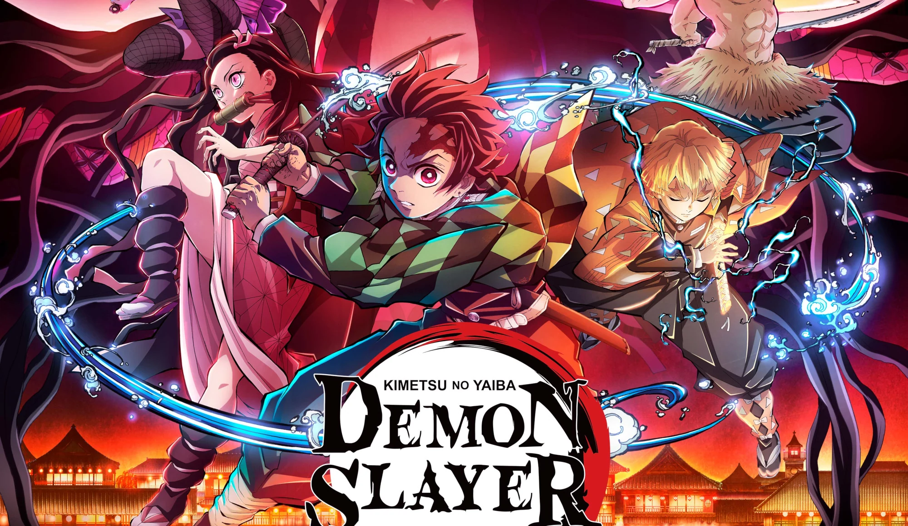

Demon Slayer - Kimetsu no Yaiba
A segunda temporada foi de tirar o folego, todos estão ansiosos para o que está por vir
A segunda temporada foi de tirar o folego, todos estão ansiosos para o que está por vir

Tanjiro Kamado (竈門かまど 炭たん治じ郎ろう Kamado Tanjirō?) é o protagonista principal de Demon Slayer: Kimetsu no Yaiba. Ele é um Caçador de Oni do Esquadrão de Caçadores de Onis, que se juntou para encontrar um remédio para transformar sua irmã, Nezuko Kamado, que foi transformada em um Oni, de volta em um humano..